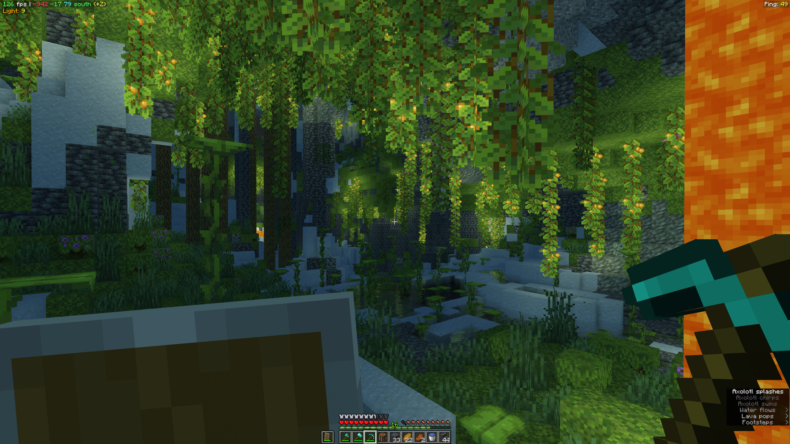
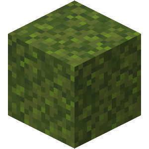
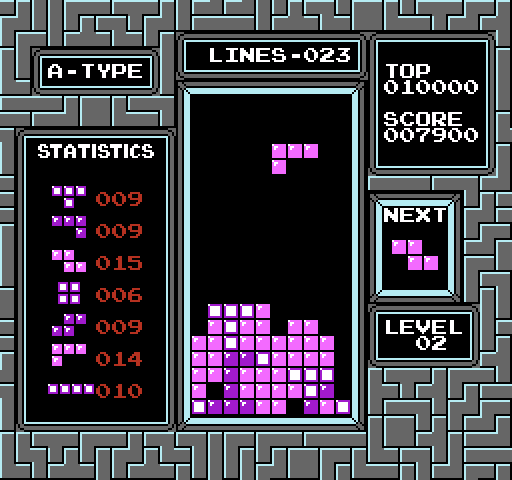
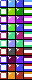
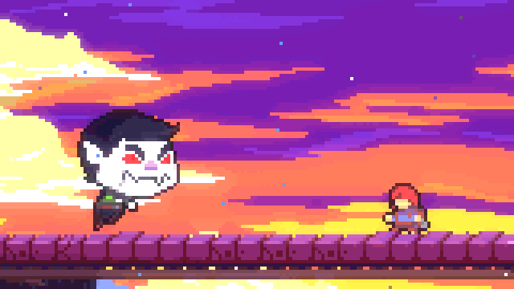
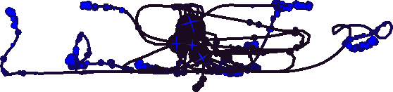
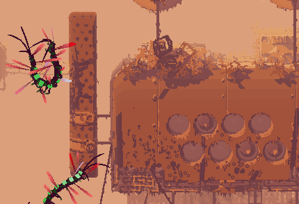
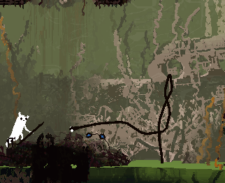
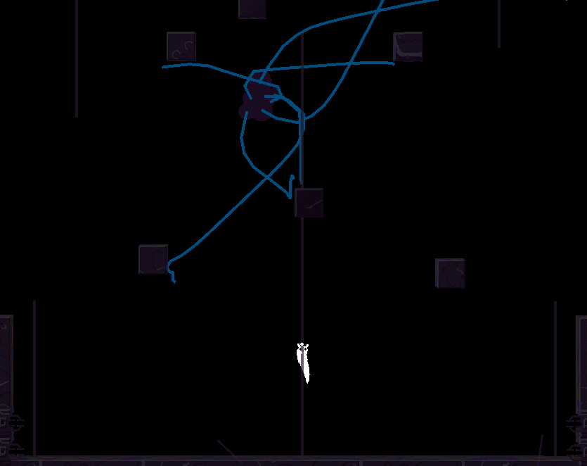

Procedural Animation
수학적 애니메이션
by 20118 이도이
Sprites





Procedural Animation
- 알고리즘을 통해 생성
- 실시간 생성 $\rightarrow$ 동적
- $(r\cos\theta, r\sin\theta)$
- $Am+B(1-m)$
- Bezier Curve
Procedural Animation
- $(r\cos\theta, r\sin\theta)$
- $Am+B(1-m)$
- Bezier Curve
Procedural
- 알고리즘을 통해 생성
- 실시간 생성 $\rightarrow$ 동적
Keyframe
- 각 프레임을 직접 생성
- 미리 생성 $\rightarrow$ 동적 X
Procedural Techniques
- Inverse Kinematic(IK)
- Physics Simulations
Circle Constraint
Circle Constraint
Circle Constraint
Forward Kinematics
Forward Kinematics
Forward Kinematics
FABRIK
FABRIK
ForwardAndBackwardReachingInverseKinematics
FABRIK
FABRIK
Rain World
징그러움 주의
Rain World
Rain World
Rain World
Rain World
Rain World
Rain World

Summary
수학적 원리를 이용해 애니메이션을 생성
- Circle Constraint - 애벌레
- Forward Kinematics - 로봇팔
- FABRIK - 촉수